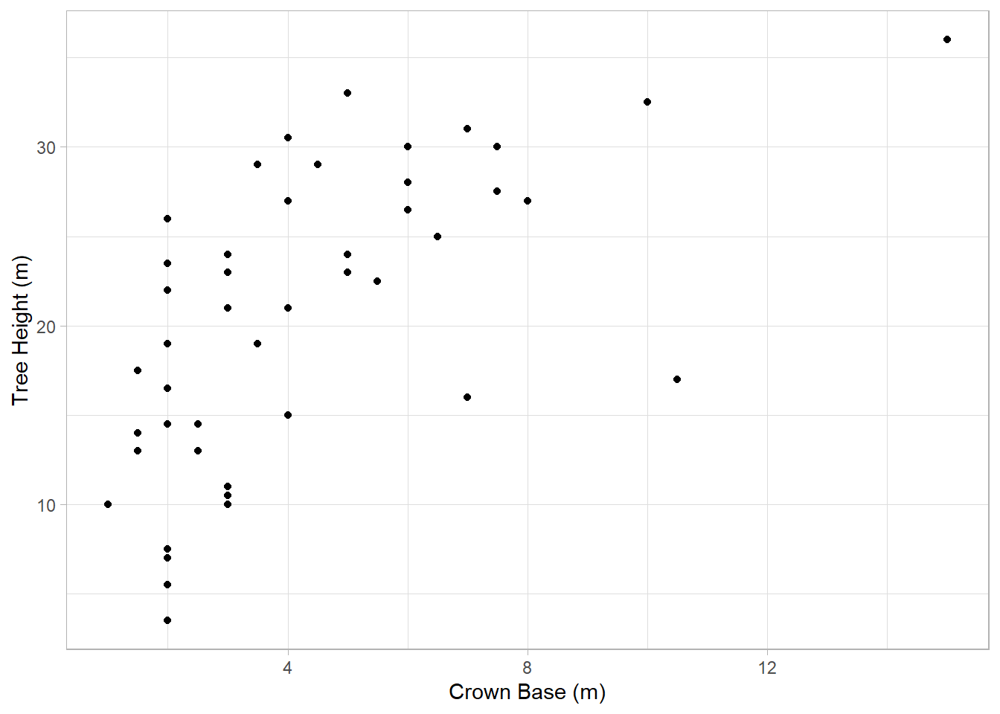
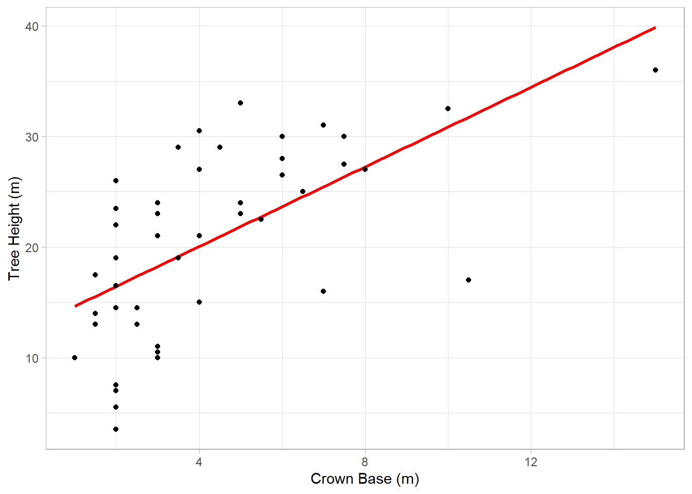
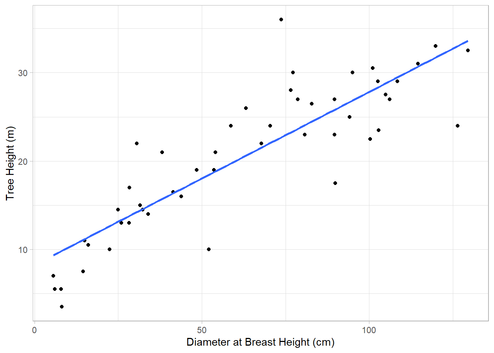

Let’s say that the city of Charlotte, NC wants to protect critical habitats in its urban forests. A recent study has shown that the endangered Carolina northern flying squirrel has a preference for Willow Oak trees above a height of 25 meters. The city parks department works with local volunteers to identify these trees; however, taking accurate height measurements can be difficult and time-consuming. They would like to find an easier way to estimate height, so they turn to you, the trusty data scientist, to try and answer this question.
The question we want to answer is: can we use the relationship between tree height and some other measurement(s) to estimate, or model, tree height? So first, we would want to know whether a relationship exists between measurements.
What we’d like to know is whether a linear relationship exists between crown base height and tree height. By linear, we mean that an increase of some increment in one variable (crown base height) will coincide with in an increase in the variable of interest (tree height). Let’s see what the relationship between our variables looks like visually:
ggplot(treeDataNC,aes(x=CrnBase,y=`TreeHt (m)`)) +geom_point() +labs(x="Crown Base (m)",y="Tree Height (m)") +theme_light()

Notice CrnBase is not surrounded by backticks, while TreeHt (m) has them. Remember that the reason is that CrnBase doesn’t have any non-standard characters like whitespace or parentheses, so the read_csv function didn’t add them, and they aren’t needed to refer to the variable in the aesthetic mapping.
OK, so what do we see here? Well, there does seem to be an increase, but it isn’t very strong. We can assess this strength by doing a correlation test:
Pearson's product-moment correlation
data: treeDataNC$CrnBase and treeDataNC$`TreeHt (m)`
t = 5.3424, df = 47, p-value = 2.62e-06
alternative hypothesis: true correlation is not equal to 0
95 percent confidence interval:
0.4031591 0.7638432
sample estimates:
cor
0.6146721
The cor value is 0.61, which suggests a positive relationship, but it isn’t especially strong. The p-value is very low, though, so this indicates we can reject the idea there isn’t a relationship. Of course, we didn’t check to see whether the data are normally distributed. We can use shapiro.test to do that:
Shapiro-Wilk normality test
data: treeDataNC$`TreeHt (m)`
W = 0.96854, p-value = 0.2117
shapiro.test(treeDataNC$CrnBase)
Shapiro-Wilk normality test
data: treeDataNC$CrnBase
W = 0.84429, p-value = 1.293e-05
Remembering back to Week 6, a p-value greater than our cut-off threshold (0.05) tells us that we can’t reject the null hypothesis that the data are normally distributed. This is true for tree height, but not so for the crown base height. Therefore, we should probably run our correlation test again, but this time using the Spearman method:
Spearman's rank correlation rho
data: treeDataNC$CrnBase and treeDataNC$`TreeHt (m)`
S = 6156.7, p-value = 5.37e-08
alternative hypothesis: true rho is not equal to 0
sample estimates:
rho
0.6858807
The result is pretty similar: we can reject the idea that there is no relationship, and the data indicate a positive relationship. The rho value is a little improved, but not by a lot.
1.0.1 Building a model: single predictor regression
Given the existence of a relationship, we could ask: how well can we predict tree height from crown base height? A linear model can help us to estimate this. If you think back to our scatter plot, what a linear model does is draw a straight line through the data that minimizes the distance to all of the points.
`geom_smooth()` using formula = 'y ~ x'

If we find that the line fits the data well, which would be indicated by how closely the data fall along it, then we can use the line to provide us with predictions about data we have not observed. For example, looking at the plot above, the linear model would predict that a tree with a crown base height of 10 meters would have a total height of about 31 meters. Of course, the value of this prediction depends on how well the model fits the data.
To create our model, we’ll use the lm, or linear model, function:
What have we done here? What this code does is asks R to conduct a linear regression on these two variables and save it as a linear model object called treeModel. At a minimum, lm needs an argument that comes in the form of a formula:
y~x
Where y is the response variable (tree height) and x is a predictor (crown base height). If we just want to use column names like we have here, we also have to supply a data argument, which in this case is the treeDataNC tibble. We could get the same result without this argument by referring to the columns using the $ operator:
So now our model is stored as treeMod_cb. We can get a quick look at the results by using the summary function:
summary(treeMod_cb)
Call:
lm(formula = treeDataNC$`TreeHt (m)` ~ treeDataNC$CrnBase)
Residuals:
Min 1Q Median 3Q Max
-14.7496 -4.3383 0.9595 5.5553 11.1581
Coefficients:
Estimate Std. Error t value Pr(>|t|)
(Intercept) 12.8348 1.7161 7.479 1.54e-09 ***
treeDataNC$CrnBase 1.8014 0.3372 5.342 2.62e-06 ***
---
Signif. codes: 0 '***' 0.001 '**' 0.01 '*' 0.05 '.' 0.1 ' ' 1
Residual standard error: 6.591 on 47 degrees of freedom
Multiple R-squared: 0.3778, Adjusted R-squared: 0.3646
F-statistic: 28.54 on 1 and 47 DF, p-value: 2.62e-06
There’s a few different pieces of information here, let’s go through some of the most relevant:
Residuals: Residuals are how far the real data deviate from the line produced by the model. These are expressed here as an interquartile range
Coefficients: These are indicating the relative increments that the response variable changes in response to the predictors.
R-squared (R2): These are measures of the proportion of variance in the response (dependent) variable accounted for by the model A value of 1 would indicate a perfect match between predictor and
Multiple R-squared is the raw R-squared; for instances where more than one predictor is used, this
Adjusted R-squared adjusts for the number of predictors, favoring models with fewer predictors. Under most circumstances, this is the preferred
: This is
An adjusted R-squared value of 0.36 is not great. Let’s see if we can get a better match with diameter at breast height, or DBH:
ggplot(treeDataNC,aes(x=`DBH (cm)`,y=`TreeHt (m)`)) +geom_point() +geom_smooth(method="lm",se=FALSE) +labs(x="Diameter at Breast Height (cm)",y="Tree Height (m)") +theme_light()

Here you might notice is that we added an argument, method="lm", to the geom_smooth function. This is saying that, , we want to use a linear model. This lets ggplot create a line from a linear model rather than use the default loess smoother. We also included the argument se=false, which removes the error ribbon around the line. This allows us to see the model as it would exist from the formula we used above.
From this plot, it looks like there is a pretty good relationship between these two variables. However, we still want to assess the data using a correlation:
Warning in cor.test.default(treeDataNC$`DBH (cm)`, treeDataNC$`TreeHt (m)`, :
Cannot compute exact p-value with ties
Spearman's rank correlation rho
data: treeDataNC$`DBH (cm)` and treeDataNC$`TreeHt (m)`
S = 2571.2, p-value = 5.943e-16
alternative hypothesis: true rho is not equal to 0
sample estimates:
rho
0.868814
The Spearman test says we can’t rule out a relationship (no surprise), and there is a stronger positive relationship than what we saw before (again, not surprising).